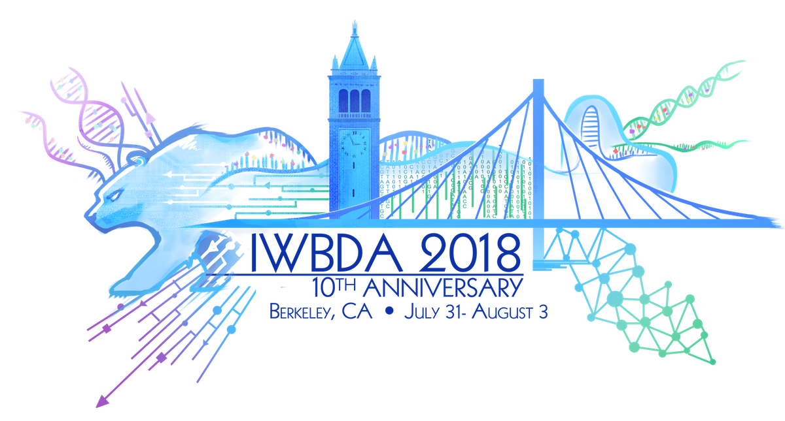

10th International Workshop on Bio-Design Automation
Proceedings
IWBDA 2018 Booklet
Tuesday, July 31st
BDAthlon (http://www.iwbdaconf.org/2018/#bdathlon)
Wednesday, August 1st
SBOL Workshop (http://sbolstandard.org/iwbda-2018/)
Thursday, August 2nd
08:30 - 08:40 Welcome & Opening Remarks, Nathan Hillson (Berkeley Labs)
08:40 - 10:00 Session I: Design Automation, Chair: Prashant Vaidyanathan (Boston University)
- A Software Tool for Designing Trans-Differentiation Experiments with Combinations of Transcription Factors
Evan Appleton, Jenhan Tao, Alex Ng, Christopher Glass, George Church
- A Combined Hierarchical-Combinatorial Design Editor for Large Scale DNA Library Construction
James Craft, Michael Matena, Ximena Morales, Rodrigo Pavez, Adam Thomas, Nathan Hillson, Michael Fero
- An integrated BUILD system for DNA construction
Taoh Green, Chris Lamkin, Tiffany Dai, Sam Denicola, Laurel Estes, George McArthur, Ximena Morales, William Moskal, Rodrigo Pavez, Thomas Rich, Adam Thomas, Michael Fero
- Optimal gene circuits for dynamic metabolic engineering
Irene Otero-Muras, Ahmad Mannan, Julio Banga and Diego Oyarzún
10:00 - 10:30 Break
10:30 - 11:30 Keynote I: Héctor García Martín (Berkeley Labs)
- Title: Towards a predictive synthetic biology enabled by machine learning and automation
- Abstract: Biology has been transformed in the second half of the 20th century from a descriptive to a design science. We can engineer cells faster than ever, enabled by exponentially growing DNA synthesis and revolutionary tools like CRISPR-enabled gene editing. However, while we can make the DNA changes we intend, the end result on cell behavior is usually unpredictable. In this talk, I will explain our efforts to create predictive algorithms that take -omics data and produce actionable items for bioengineering biofuel-producing cells. I will show how machine learning and mechanistic models, enabled by automation capabilities such as microfluidics, can produce predictions accurate enough to drive synthetic biology efforts.
11:30 - 12:00 Poster Pitches I (1min per poster), Chair: Ernst Oberortner (Berkeley Labs)
-
Bryan Bartley, James McLaughlin, Goksel Misirli, Victor de Lorenzo, Anil Wipat and Angel Goni-Moreno.
Coordinating standards: digitalization of the Standard European Vector Architecture with the Synthetic Biology Open Language
-
Nicholas Emery, Marilene Pavan and Douglas Densmore.
Damp Lab North: Using Formal Representations of Protocols for Specify-Design-Build-Test Cycle in a Prototypical Software-Driven Laboratory
-
Luis Ortiz, Ali Lashkaripour and Douglas Densmore.
Automating Functional Enzyme Screening & Characterization
-
Nicholas Roehner, Bryan Bartley, Jacob Beal, James McLaughlin, Matthew Pocock, Michael Zhang, Zach Zundel, Chris Myers and Anil Wipat.
Specifying Combinatorial Designs with the Synthetic Biology Open Language
-
Federico Muffatto, Sabrina Zaini and Frido Emans.
The Desktop Biofoundry: Biodesign Manufacturing Automation in a Cloud-driven Digital Microfluidics Platform with Integrated Temperature Control, Optical Sensing and Purification
-
Steve Shih.
Automating synthetic biology using microfludics
-
Jesse Tordoff, Jacob Beal, Ron Weiss, Bryan Bartley, Gizem Gumuskaya, Katherine Kiwimagi, Matej Krajnc, Kevin Lebo, Stanislav Shvartsman, Allen Tseng and Nicholas Walczak.
Toward Programming 3D Shape Formation in Mammalian Cells
-
Valentin Zulkower, Isaac Luo, Aitor Bleda and Hille Tekotte.
Software Projects of the Edinburgh Genome Foundry
12:00 - 14:30 Lunch & Poster Session I
14:30 - 15:30 Session II: Machine-Learning, Chair: Curtis Madsen (Boston University)
- A Reverse Predictive Model Towards Design Automation of Microfluidic Droplet Generators
Ali Lashkaripour, Christopher Rodriguez, Douglas Densmore
- A Machine Learning Environment for Synthetic Biology
Rodrigo Pavez, Felipe Loyola, Andres Perez, Cesar Pinto, Andres Ramirez, Pablo Vera, Michael Fero, Eduardo Abeliuk
- Identifying composition rules for transcription factor circuits that control macrophage signal response with deep learning
Jenhan Tao, Gregory Fonseca, Christopher Glass
15:30 - 16:00 Break
16:00 - 16:40 Session III: Standards, Chair: Cornelia Scheitz (Autodesk)
- The Synthetic Biology Open Language Supports Integration of the Engineering Life-Cycle for Synthetic Biologists
Bryan Bartley, Christian Atallah, Alasdair Humphries, Vishwesh Kulkarni, Curtis Madsen, Goksel Misirli, Angel Goni-Moreno, Tramy Nguyen, Ernst Oberortner, Nicholas Roehner, Meher Samineni, Zach Zundel, Jacob Beal, Chris Myers, Herbert Sauro, Anil Wipat
- Standardizing Design Performance Comparison in Microfluidic Manufacturing
Radhakrishna Sanka, Brian Crites, Joshua Lippai, Jeffrey McDaniels, Phillip Brisk, Douglas Densmore
16:40 - 17:00 Daily Wrap-up & Announcements, Nathan Hillson (Berkeley Labs)
Social Event
Friday, August 3rd
09:00 - 09:10 Opening Remarks, Nathan Hillson (Berkeley Labs)
09:10 - 10:30 Session IV: Applications, Chair: Jenhan Tao (UCSD)
Integrated computational extraction of cross-cancer poly-omic signatures
Guido Zampieri, Claudio Angione- Towards Computer-Aided Synthetic Developmental Biology
Evan Appleton, Michael Moret, Tristan Daifuku, George Church
- Automated design of gene circuits with optimal mushroom-bifurcation behaviour
Rubén Pérez-Carrasco, Irene Otero-Muras, Julio Banga, Chris Barnes
Mechanistic effects of influenza in bronchial cells through poly-omic genome-scale modelling
Elisabeth Yaneske, Claudio Angione
10:30 - 10:50 Break
10:50 - 11:00 Allan Kuchinsky IWBDA Scholarship Award
11:00 - 12:00 Discussion Session, Chair: Douglas Densmore (Boston University)
- Topic: Bio-Design Automation Design Metrics: What is useful? What is not?
12:00 - 12:30 Poster Pitches II (1min per poster), Chair: Ernst Oberortner (Berkeley Labs)
-
Pablo Carbonell, Sandra Taylor, Rehana Sung, Adrian J Jervis, Rainer Breitling, Jean-Loup Faulon and Nigel S Scrutton.
Context-aware predictive tools for portable genetic circuit engineering
-
Timothy Jones, Tramy Nguyen, Zach Zundel, Chris Myers and Douglas Densmore.
Asynchronous Genetic Circuit Design Automation with Cloud-based Component Libraries
-
Xianwei Meng, Ernst Oberortner, Nathan Hillson and Samuel Deutsch.
Tracking the provenance of synthetic biological system construction at the DOE Joint Genome Institute (JGI)
-
Thomas Rich, Tiffany Dai, Sam Denicola, Ximena Morales, Nathan Hillson and Michael Fero.
Open Vector Editor - DNA Viewing and Annotation
-
Muhammad Abdullah Siddiqui, Adil Ali Khan, Hasan Baig and Jan Madsen.
GeneTech 2.0: Improved Genetic Circuit Synthesis and Technology Mapping
-
Pauline Trébulle, Jean-Marc Nicaud and Mohamed Elati.
CoRegCAD: a framework from regulatory network to metabolic engineering
12:30 - 14:00 Lunch & Poster Session II
14:00 - 15:00 Keynote II: Hana El-Samad (UCSF)
- Title: Biological control: The versatile ways in which cells use feedback loops
- Abstract: In 1939, Walter Cannon wrote in his book The wisdom of the Body: “The living being is an agency of such sort that each disturbing influence induces by itself the calling forth of compensatory activity to neutralize or repair the disturbance”. Since this remarkable statement that postulates the use of feedback control to support life, we have come to appreciate that the use of feedback loops is ubiquitous at every level of biological organization, from the gene to the ecosystem. In this talk, we introduce a technology to systematically pinpoint and study feedback operation in endogenous biological systems. We also discuss how building synthetic feedback control with modular architecture and predictable operation would be immensely enabling for biotechnology, and present some ideas on how this might be achieved.
15:00 - 15:30 Break
15:30 - 16:50 Session V: Modeling, Chair: Nicholas Roehner (BBN Technologies)
- Temporal Verification of Genetic Circuits
Curtis Madsen, Prashant Vaidyanathan, Nicholas Delateur, Evan Appleton, Greg Frasco, Calin Belta, Ron Weiss and Douglas Densmore
- An Automated BioModel Selection System (BMSS) for Gene Circuit Design
Chueh Loo Poh, Jingwui Yeoh and Kai Boon Ivan Ng
- Spatiotemporal principles of genetic circuit design
Ruud Stoof, Alexander Wood, James McLaughlin, Anil Wipat and Angel Goni-Moreno
- BLiSS: Black-List Sequence Screening
Lisa Simirenko, Jan-Fang Cheng, Samuel Deutsch, Nathan J. Hillson
16:50 - 17:00 Closing Remarks, Nathan Hillson (Berkeley Labs)